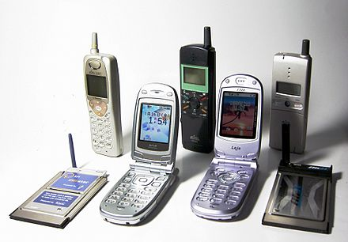

.jpg)
A handheld mobile radio telephone service was envisioned in the early stages of radio engineering. In 1917, Finnish inventor Eric Tigerstedt filed a patent for a "pocket-size folding telephone with a very thin carbon microphone". Early predecessors of cellular phones included analog radio communications from ships and trains. The race to create truly portable telephone devices began after World War II, with developments taking place in many countries. The advances in mobile telephony have been traced in successive "generations", starting with the early zeroth-generation (0G) services, such as Bell System's Mobile Telephone Service and its successor, the Improved Mobile Telephone Service. These 0G systems were not cellular, supported few simultaneous calls, and were very expensive.
Facts:
The first-ever mobile phone call was made on April 3, 1973, by Martin Cooper, a Motorola researcher. He called his rival at Bell Labs to inform him that he was speaking via a mobile phone.The first handheld cellular mobile phone was demonstrated by John F. Mitchell[11][12] and Martin Cooper of Motorola in 1973, using a handset weighing 2 kilograms (4.4 lb).[2] The first commercial automated cellular network (1G) analog was launched in Japan by Nippon Telegraph and Telephone in 1979. This was followed in 1981 by the simultaneous launch of the Nordic Mobile Telephone (NMT) system in Denmark, Finland, Norway, and Sweden.[13] Several other countries then followed in the early to mid-1980s. These first-generation (1G) systems could support far more simultaneous calls but still used analog cellular technology. In 1983, the DynaTAC 8000x was the first commercially available handheld mobile phone.
In 1991, the second-generation (2G) digital cellular technology was launched in Finland by Radiolinja on the GSM standard. This sparked competition in the sector as the new operators challenged the incumbent 1G network operators. The GSM standard is a European initiative expressed at the CEPT ("Conférence Européenne des Postes et Telecommunications", European Postal and Telecommunications conference). The Franco-German R&D cooperation demonstrated the technical feasibility, and in 1987 a Memorandum of Understanding was signed between 13 European countries who agreed to launch a commercial service by 1991. The first version of the GSM standard had 6,000 pages. The IEEE and RSE awarded to Thomas Haug and Philippe Dupuis the 2018 James Clerk Maxwell medal for their contributions to the first digital mobile telephone standard.[14] In 2018, the GSM was used by over 5 billion people in over 220 countries.
The GSM (2G) has evolved into 3G, 4G and 5G. The standardisation body for GSM started at the CEPT Working Group GSM (Group Special Mobile) in 1982 under the umbrella of CEPT. In 1988, ETSI was established and all CEPT standardization activities were transferred to ETSI. Working Group GSM became Technical Committee GSM. In 1991, it became Technical Committee SMG (Special Mobile Group) when ETSI tasked the committee with UMTS (3G). In addition to transmitting voice over digital signals, 2G network introduced data services for mobile, starting with SMS text messages then expanding to Multimedia Messaging Service (MMS), and mobile internet with theoretical maximum transfer speed of 384 kbit/s (48 kB/s).
Facts:
Smartphones have revolutionized the mobile industry. The term "smartphone" was first coined by Ericsson in 1997 to describe devices that combined the functionalities of a mobile phone and a personal digital assistant (PDA).In 2001, the third-generation (3G) was launched in Japan by NTT DoCoMo on the WCDMA standard.[15] This was followed by 3.5G or 3G+ enhancements based on the high-speed packet access (HSPA) family, allowing UMTS networks to have higher data transfer speeds and capacity. 3G is able to provide mobile broadband access of several Mbit/s to smartphones and mobile modems in laptop computers. This ensures it can be applied to mobile Internet access, VoIP, video calls, and sending large e-mail messages, as well as watching videos, typically in standard-definition quality.
By 2009, it had become clear that, at some point, 3G networks would be overwhelmed by the growth of bandwidth-intensive applications, such as streaming media.[16] Consequently, the industry began looking to data-optimized fourth-generation (4G) technologies, with the promise of speed improvements up to ten-fold over existing 3G technologies. The first publicly available LTE service was launched in Scandinavia by TeliaSonera, in 2009. In the 2010s, a 4G technology has found diverse applications across various sectors, showcasing its versatility in delivering high-speed wireless communication, such as mobile broadband, internet of things (IoT), fixed wireless access, and multimedia streaming (including music, video, radio, and television).
Facts:
Mobile phones have become ubiquitous worldwide. As of 2021, there are over 5.27 billion unique mobile phone users globally, representing around 67.5% of the world's population.Deployment of fifth-generation (5G) cellular networks commenced worldwide in 2019. The term "5G" was originally used in research papers and projects to denote the next major phase in mobile telecommunication standards beyond the 4G/IMT-Advanced standards. The 3GPP defines 5G as any system that adheres to the 5G NR (5G New Radio) standard. 5G can be implemented in low-band, mid-band or high-band millimeter-wave, with download speeds that can achieve gigabit-per-second (Gbit/s) range, aiming for a network latency of 1 ms. This nearreal- time responsiveness and improved overall data performance are crucial for applications like online gaming, augmented and virtual reality, autonomous vehicles, IoT, and critical communication services